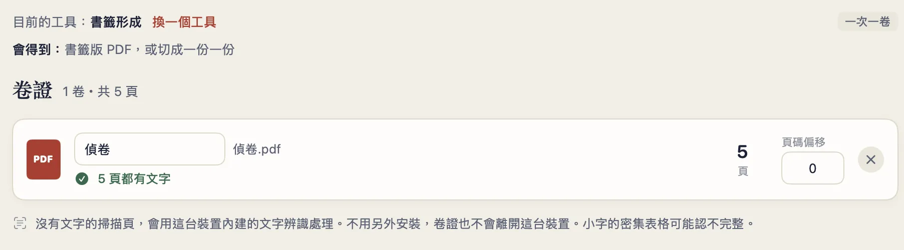
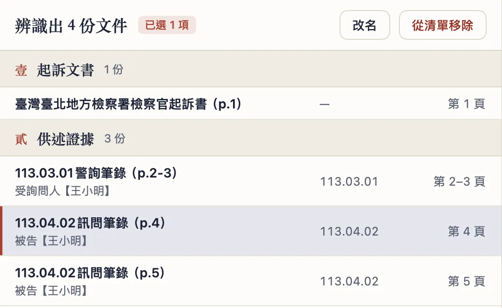
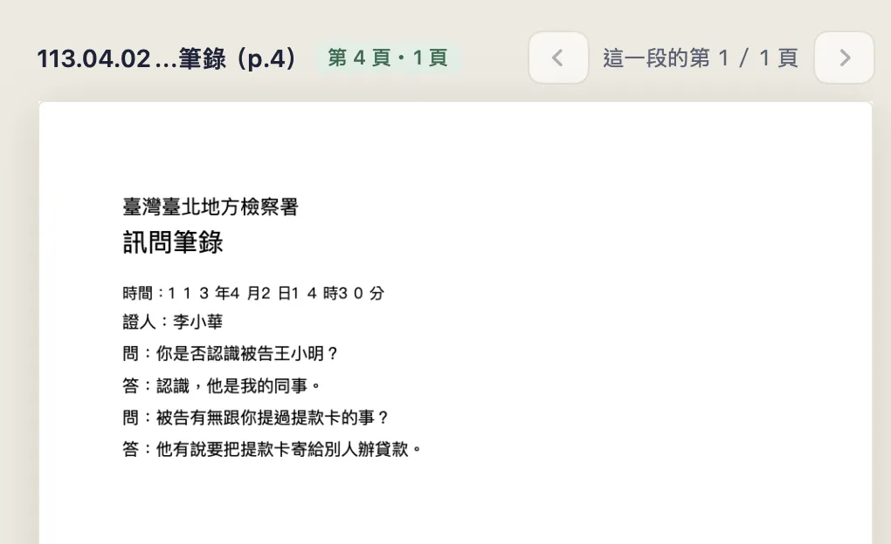
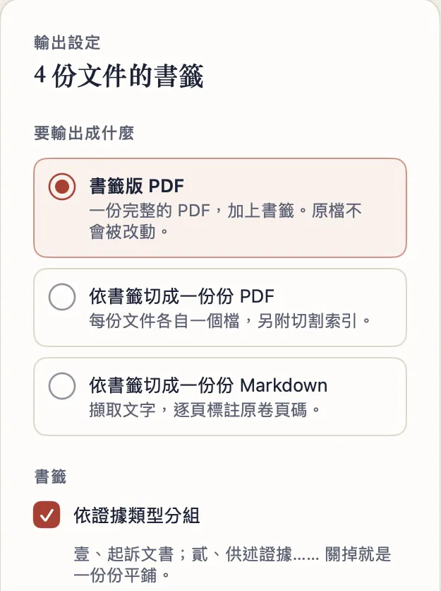
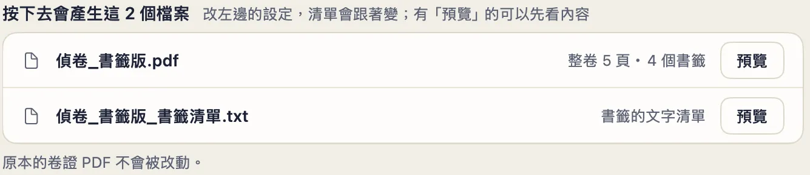
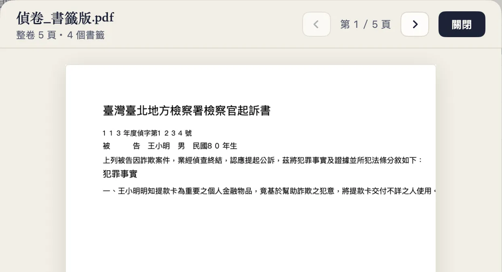

替整卷卷證加上書籤：書籤形成教學
閱卷拿到的電子卷證，常常是幾十份文件接成一個 PDF，沒有書籤。「書籤形成」會找出每一份文件從哪一頁開始，依證據類型分組列成清單；核對過後，輸出一份加了書籤的 PDF，或依書籤切成一份一份。
這個工具做什麼
「書籤形成」在首頁的「讀卷」那一組。放入一卷卷證，App 從每一頁的開頭找出起訴書、筆錄、書狀等文件的起點，把整卷分成一份一份，再依證據類型分組（壹、起訴文書；貳、供述證據……）。
輸出有三種：加了書籤的一份完整 PDF、依書籤切成一份份 PDF，或依書籤切成一份份 Markdown。原本的卷證 PDF 不會被改動。
這篇用合成的示範卷「偵卷.pdf」（5 頁，起訴書、警詢筆錄、兩份訊問筆錄）說明。放入 PDF 的幾種方法與共通的步驟，在第一次使用那篇。
第一步：放入一卷
從首頁或側邊欄點「書籤形成」（Mac 也可以按 ⌘2），把 PDF 拖進虛線框，或按「選擇檔案…」。

- 這個工具一次處理一卷。放了兩卷以上時會提醒「一次處理一卷，請只留一卷」，按 ✕ 拿掉多的才能開始。幾卷都要加書籤，就一卷一卷做。
- 每一列有卷宗簡稱與頁碼偏移兩個欄位，是讀卷幾個工具共用的。書籤形成只用卷宗簡稱當輸出資料夾的名稱（例如「偵卷 書籤形成」）；輸出的檔名用原本的檔名，書籤與頁碼用 PDF 的頁碼，不受頁碼偏移影響。
- 掃描頁會在放進來時自動辨識文字，辨識完成前不能開始分析。
有開啟密碼的卷，放進來時會就地問密碼。密碼只在這次使用時留在記憶體，不會存起來。

放好之後，按右上角的「開始分析」。畫面中間顯示「正在分析卷證」，卷很大時可以按「停止」。
第二步：核對分出來的文件
分析完成，左邊是「辨識出 N 份文件」的清單，依證據類型分組，組名前面有壹、貳等編號。每一列是一份文件：
- 第一行是書籤標題，例如「113.04.02訊問筆錄（p.4）」。
- 筆錄的第二行是陳述人，例如「被告【王小明】」「受詢問人【王小明】」。
- 右邊是日期與這份文件在卷裡的頁碼範圍（第 2–3 頁）。
左邊：分出來的文件

右邊：這一份的頁面

點一列，右邊顯示那份文件的頁面。上方寫著「這一段的第 1／N 頁」，按左右箭頭翻這一份的其他頁。核對的重點是：每一份的第一頁是不是真的從那份文件的開頭開始、標題與日期對不對、有沒有兩份被併成一份。
第二行的陳述人也請看一下。示範卷第 4 頁寫的是「證人：李小華」，清單上卻是「被告【王小明】」。書籤依證據類型分組時，供述證據的書籤會依陳述人整理，所以陳述人判斷錯，書籤的位置也會跟著錯。書籤形成裡沒有改陳述人的按鈕，只能用「改名」改書籤標題；要依陳述人整理筆錄，請用供述切割，那裡可以修改陳述人。
分錯的時候：改名與移除
清單上方有兩個按鈕，要先選列才能按：
- 改名：只選一份時才能按（沒選或選了好幾份時，旁邊寫「選一份才能改名」）。跳出「修改書籤標題」，輸入新標題按「確定」。
- 從清單移除：把選到的文件從清單拿掉。拿掉的那一份，頁面會併進前一份文件的範圍，PDF 本身的頁數不變。
直接點一列是只選那一列，再點一次取消。按住 ⌘ 或 Shift 再點，可以選好幾列一起移除。選了幾列，標題旁會顯示「已選 N 項」。
清單裡沒有的文件（App 沒找到開頭的那一份），目前沒有辦法在這裡補一筆；它的頁面會留在前一份文件的範圍裡。如果整卷都沒找到文件，會顯示「沒有辨識出文件」，可以回上一步換一個工具，例如用「章節切割」或「PDF 轉 Markdown」。
核對完，按右上角的「下一步：輸出」。
第三步：選輸出方式
輸出設定的「要輸出成什麼」有三種，選一種：

- 書籤版 PDF：一份完整的 PDF，加上書籤。頁面跟原檔一樣，只是多了書籤。
- 依書籤切成一份份 PDF：每份文件各自一個檔，另附切割索引。
- 依書籤切成一份份 Markdown：擷取文字，每份文件一個 .md 檔，逐頁標註原卷頁碼。
「書籤」底下的依證據類型分組預設勾選：第一層書籤是「壹、起訴文書」「貳、供述證據」這類分組，每一份文件排在所屬的分組底下，供述證據再依陳述人整理在一起。取消勾選，書籤就是一份份平鋪成一層。
右邊列出會產生的檔案，改設定，清單跟著變。

有「預覽」的檔案可以先打開看。書籤版 PDF 和切出來的 PDF 可以一頁一頁翻；書籤清單 .txt 可以看文字內容。Markdown 和切割索引要整份輸出後才有內容，沒有預覽。

確認好了，按右上角的「開始輸出 N 個檔案」。
輸出的檔案
選書籤版 PDF 時，會得到兩個檔案：
- 偵卷_書籤版.pdf：整卷的頁面加上書籤。用 PDF 閱讀程式打開，在側邊欄的書籤（目錄）點一份文件，就跳到那一頁。
- 偵卷_書籤版_書籤清單.txt：書籤的文字清單，可以貼到書狀或筆記裡當目錄用。
選切成一份份時，檔案放在「原檔名_切割」資料夾裡（例如「偵卷_切割」），依證據類型分成子資料夾，供述證據再依人分資料夾。每份文件一個檔案，檔名用書籤標題；另附一份「_切割索引.md」，列出每個檔案對照原卷的頁碼。Markdown 的每一頁前面標著「〔原卷第 N 頁〕」。
這些檔案都存在「下載項目 › 審判工具箱」底下新開的資料夾（例如「偵卷 書籤形成」），也可以在輸出前用「存到 › 選擇…」換位置。
在 iPhone・iPad 上
步驟與選項跟 Mac 相同。在 iPhone 上，「開始分析」「下一步：輸出」等按鈕在畫面下方；清單點一列會整頁顯示那份文件的頁面，左右滑看其他頁，「不要這一段」也在那一頁。清單每列左邊有勾選框，可以勾好幾份再按「從清單移除」。輸出的檔案在「檔案」App 的「我的 iPhone › 審判工具箱」。iPhone・iPad 版的畫面在iPhone・iPad 介紹頁。
做不到的事／要注意
- App 是用規則找每一份文件的開頭（起訴書、筆錄、書狀常見的標題與版式），不是 AI 模型。版式特殊的文件可能沒找到，或被併進前一份；請在第二步核對。
- 掃描頁靠文字辨識，辨識錯的字會讓標題或日期不對，也可能找不到文件的開頭。掃描品質差的卷，可以先用「可搜尋 PDF」看看辨識出的文字。
- 一次處理一卷。幾卷要合在一起加書籤，先用「頁面整理」合併成一份。
- 清單裡只能改書籤標題和移除，不能改陳述人、手動新增一份文件或調整頁碼範圍。
- 輸出的 PDF 不會保留原檔的表單欄位和內嵌附件。
下一篇：依陳述人分開筆錄：供述切割教學。簡短的步驟在使用說明。
常見問題
可以一次替好幾卷加書籤嗎？
不行，書籤形成一次處理一卷。幾卷都要加書籤，就一卷一卷做；想合成一份再加書籤，先用「頁面整理」合併。
分出來的文件不對怎麼辦？
在確認與預覽這一步，選一份按「改名」修改書籤標題；多出來的選起來按「從清單移除」，那幾頁會併進前一份文件。
掃描的卷證可以加書籤嗎？
可以。沒有文字的頁面會先自動辨識文字，再找文件的開頭。掃描品質差、字很小時容易出錯，請核對清單。